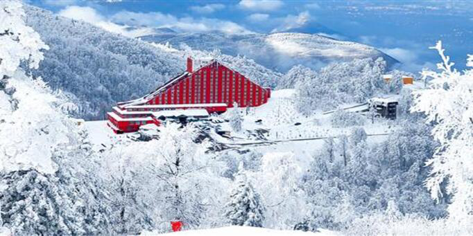
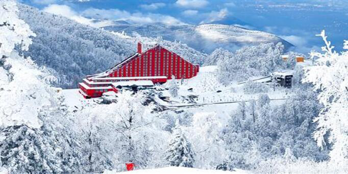
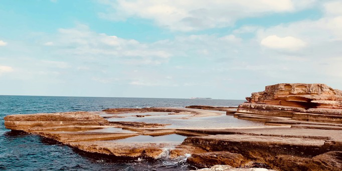
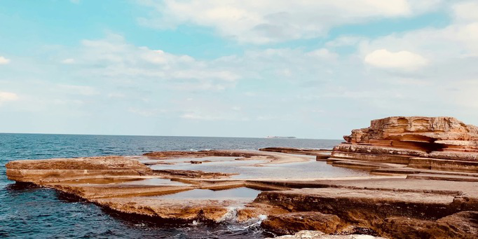

- İZMİT
- BAŞİSKELE
- KARTEPE
- KÖRFEZ
- KANDIRA
- GÖLCÜK
- KARAMÜRSEL
- GEBZE
- DARICA
- DİLOVASI
- DERİNCE
- ÇAYIROVA
|
- SEKAPARK
- ORMANYA
- PEMBE KAYALAR
- YUVACIK BARAJI
- HANNİBAL ANIT MEZARI
- OSMAN HAMDİ BEY MÜZESİ
- GAYRET GEMİ MÜZESİ
- BALLIKAYALAR KANYONU
- GAZİLERDAĞI TABİAT PARKI
- ARKEOLOJİ VE ETNOGRAFYA MÜZESİ
- İZMİT SAAT KULESİ
- KARTEPE KAYAK MERKEZİ
|
- PİŞMANİYE
- CIZLAMA
- DEĞİRMENDERE FINDIĞI
- CİĞCELİ KAVURMA
- MANCARLI PİDE
- DARTI
- YARIMCA KİRAZI
- KANDIRA YOĞURDU
- KESME ÇORBASI
- BEZİRYAĞI
- ÖĞRE TATLISI
- HÖŞMERİM
|
- 41 BURDA AVM
- SYMBOL AVM
- NCITY AVM
- ARASTAPARK AVM
- DOLPHİN AVM
- KİPA AVM
- OUTLET CENTER AVM
|
 



 
